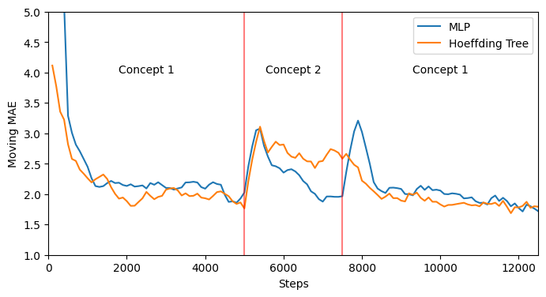

Recurring Concepts¶


from river.datasets.synth import FriedmanDrift
from river.preprocessing import MinMaxScaler
from river.metrics import MAE
from river.utils import Rolling
from river.tree import HoeffdingTreeRegressor
from deep_river.regression import Regressor
from torch import nn
from tqdm import tqdm
import matplotlib.pyplot as plt
import torch
n_samples = 12500
change_points = (5000, 7500)
friedman = FriedmanDrift(drift_type="gra", position=change_points)
def test_train_eval(model, stream, update_interval=100):
results = []
steps = []
step = 0
metric = Rolling(MAE(), window_size=400)
scaler = MinMaxScaler()
for x, y in tqdm(list(stream)):
scaler.learn_one(x)
x = scaler.transform_one(x)
y_pred = model.predict_one(x)
model.learn_one(x, y)
metric.update(y, y_pred)
step += 1
if step % update_interval == 0:
results.append(metric.get())
steps.append(step)
return steps, results
class SimpleMLP(nn.Module):
def __init__(self, n_features):
super().__init__()
self.hidden = nn.Linear(n_features, 20)
self.logit = nn.Linear(20, 1)
def forward(self, x):
h = self.hidden(x)
h = torch.relu(h)
return self.logit(h)
mlp = Regressor(
SimpleMLP(10),
loss_fn="l1",
optimizer_fn="adam",
lr=0.005,
seed=42,
)
steps, results_mlp = test_train_eval(mlp, friedman.take(n_samples))
0%| | 0/12500 [00:00<?, ?it/s]
1%|█▍ | 66/12500 [00:00<00:18, 659.97it/s]
2%|████▍ | 205/12500 [00:00<00:11, 1086.71it/s]
3%|███████▌ | 346/12500 [00:00<00:09, 1232.04it/s]
4%|██████████▌ | 485/12500 [00:00<00:09, 1293.10it/s]
5%|█████████████▊ | 630/12500 [00:00<00:08, 1347.46it/s]
6%|████████████████▉ | 773/12500 [00:00<00:08, 1372.12it/s]
7%|████████████████████ | 918/12500 [00:00<00:08, 1396.86it/s]
8%|███████████████████████ | 1062/12500 [00:00<00:08, 1410.36it/s]
10%|██████████████████████████▏ | 1204/12500 [00:00<00:08, 1409.68it/s]
11%|█████████████████████████████▎ | 1348/12500 [00:01<00:07, 1418.42it/s]
12%|████████████████████████████████▍ | 1490/12500 [00:01<00:07, 1401.28it/s]
13%|███████████████████████████████████▍ | 1631/12500 [00:01<00:07, 1399.53it/s]
14%|██████████████████████████████████████▌ | 1774/12500 [00:01<00:07, 1406.71it/s]
15%|█████████████████████████████████████████▋ | 1915/12500 [00:01<00:07, 1400.51it/s]
16%|████████████████████████████████████████████▊ | 2058/12500 [00:01<00:07, 1407.15it/s]
18%|███████████████████████████████████████████████▊ | 2199/12500 [00:01<00:07, 1403.78it/s]
19%|██████████████████████████████████████████████████▉ | 2340/12500 [00:01<00:07, 1403.49it/s]
20%|█████████████████████████████████████████████████████▉ | 2481/12500 [00:01<00:07, 1401.76it/s]
21%|█████████████████████████████████████████████████████████ | 2625/12500 [00:01<00:06, 1412.09it/s]
22%|████████████████████████████████████████████████████████████▏ | 2767/12500 [00:02<00:06, 1411.19it/s]
23%|███████████████████████████████████████████████████████████████▎ | 2909/12500 [00:02<00:06, 1411.33it/s]
24%|██████████████████████████████████████████████████████████████████▍ | 3051/12500 [00:02<00:06, 1411.86it/s]
26%|█████████████████████████████████████████████████████████████████████▌ | 3196/12500 [00:02<00:06, 1422.43it/s]
27%|████████████████████████████████████████████████████████████████████████▋ | 3339/12500 [00:02<00:06, 1411.65it/s]
28%|███████████████████████████████████████████████████████████████████████████▉ | 3487/12500 [00:02<00:06, 1429.78it/s]
29%|███████████████████████████████████████████████████████████████████████████████ | 3631/12500 [00:02<00:06, 1424.97it/s]
30%|██████████████████████████████████████████████████████████████████████████████████ | 3774/12500 [00:02<00:06, 1416.45it/s]
31%|█████████████████████████████████████████████████████████████████████████████████████▏ | 3916/12500 [00:02<00:06, 1412.60it/s]
32%|████████████████████████████████████████████████████████████████████████████████████████▎ | 4058/12500 [00:02<00:05, 1408.37it/s]
34%|███████████████████████████████████████████████████████████████████████████████████████████▍ | 4200/12500 [00:03<00:05, 1411.47it/s]
35%|██████████████████████████████████████████████████████████████████████████████████████████████▍ | 4342/12500 [00:03<00:05, 1399.16it/s]
36%|█████████████████████████████████████████████████████████████████████████████████████████████████▌ | 4483/12500 [00:03<00:05, 1402.27it/s]
37%|████████████████████████████████████████████████████████████████████████████████████████████████████▌ | 4624/12500 [00:03<00:05, 1403.36it/s]
38%|███████████████████████████████████████████████████████████████████████████████████████████████████████▋ | 4765/12500 [00:03<00:05, 1403.40it/s]
39%|██████████████████████████████████████████████████████████████████████████████████████████████████████████▊ | 4906/12500 [00:03<00:05, 1395.73it/s]
40%|█████████████████████████████████████████████████████████████████████████████████████████████████████████████▊ | 5046/12500 [00:03<00:05, 1395.60it/s]
42%|████████████████████████████████████████████████████████████████████████████████████████████████████████████████▉ | 5189/12500 [00:03<00:05, 1403.23it/s]
43%|████████████████████████████████████████████████████████████████████████████████████████████████████████████████████ | 5331/12500 [00:03<00:05, 1406.74it/s]
44%|███████████████████████████████████████████████████████████████████████████████████████████████████████████████████████▏ | 5476/12500 [00:03<00:04, 1418.81it/s]
45%|██████████████████████████████████████████████████████████████████████████████████████████████████████████████████████████▎ | 5622/12500 [00:04<00:04, 1428.32it/s]
46%|█████████████████████████████████████████████████████████████████████████████████████████████████████████████████████████████▍ | 5765/12500 [00:04<00:04, 1427.56it/s]
47%|████████████████████████████████████████████████████████████████████████████████████████████████████████████████████████████████▌ | 5908/12500 [00:04<00:04, 1425.27it/s]
48%|███████████████████████████████████████████████████████████████████████████████████████████████████████████████████████████████████▋ | 6051/12500 [00:04<00:04, 1419.51it/s]
50%|██████████████████████████████████████████████████████████████████████████████████████████████████████████████████████████████████████▊ | 6193/12500 [00:04<00:04, 1405.84it/s]
51%|█████████████████████████████████████████████████████████████████████████████████████████████████████████████████████████████████████████▊ | 6334/12500 [00:04<00:04, 1403.59it/s]
52%|████████████████████████████████████████████████████████████████████████████████████████████████████████████████████████████████████████████▉ | 6478/12500 [00:04<00:04, 1411.29it/s]
53%|████████████████████████████████████████████████████████████████████████████████████████████████████████████████████████████████████████████████ | 6620/12500 [00:04<00:04, 1400.18it/s]
54%|███████████████████████████████████████████████████████████████████████████████████████████████████████████████████████████████████████████████████▏ | 6762/12500 [00:04<00:04, 1404.76it/s]
55%|██████████████████████████████████████████████████████████████████████████████████████████████████████████████████████████████████████████████████████▏ | 6904/12500 [00:04<00:03, 1408.23it/s]
56%|█████████████████████████████████████████████████████████████████████████████████████████████████████████████████████████████████████████████████████████▎ | 7045/12500 [00:05<00:03, 1403.69it/s]
57%|████████████████████████████████████████████████████████████████████████████████████████████████████████████████████████████████████████████████████████████▎ | 7186/12500 [00:05<00:03, 1380.90it/s]
59%|███████████████████████████████████████████████████████████████████████████████████████████████████████████████████████████████████████████████████████████████▍ | 7325/12500 [00:05<00:03, 1368.55it/s]
60%|██████████████████████████████████████████████████████████████████████████████████████████████████████████████████████████████████████████████████████████████████▎ | 7462/12500 [00:05<00:03, 1366.96it/s]
61%|█████████████████████████████████████████████████████████████████████████████████████████████████████████████████████████████████████████████████████████████████████▍ | 7603/12500 [00:05<00:03, 1376.62it/s]
62%|████████████████████████████████████████████████████████████████████████████████████████████████████████████████████████████████████████████████████████████████████████▍ | 7741/12500 [00:05<00:03, 1375.89it/s]
63%|███████████████████████████████████████████████████████████████████████████████████████████████████████████████████████████████████████████████████████████████████████████▍ | 7879/12500 [00:05<00:03, 1376.27it/s]
64%|██████████████████████████████████████████████████████████████████████████████████████████████████████████████████████████████████████████████████████████████████████████████▍ | 8019/12500 [00:05<00:03, 1383.33it/s]
65%|█████████████████████████████████████████████████████████████████████████████████████████████████████████████████████████████████████████████████████████████████████████████████▌ | 8161/12500 [00:05<00:03, 1392.31it/s]
66%|████████████████████████████████████████████████████████████████████████████████████████████████████████████████████████████████████████████████████████████████████████████████████▋ | 8304/12500 [00:05<00:02, 1401.96it/s]
68%|███████████████████████████████████████████████████████████████████████████████████████████████████████████████████████████████████████████████████████████████████████████████████████▊ | 8446/12500 [00:06<00:02, 1404.95it/s]
69%|██████████████████████████████████████████████████████████████████████████████████████████████████████████████████████████████████████████████████████████████████████████████████████████▉ | 8589/12500 [00:06<00:02, 1409.28it/s]
70%|█████████████████████████████████████████████████████████████████████████████████████████████████████████████████████████████████████████████████████████████████████████████████████████████▉ | 8730/12500 [00:06<00:02, 1408.50it/s]
71%|█████████████████████████████████████████████████████████████████████████████████████████████████████████████████████████████████████████████████████████████████████████████████████████████████ | 8872/12500 [00:06<00:02, 1408.48it/s]
72%|████████████████████████████████████████████████████████████████████████████████████████████████████████████████████████████████████████████████████████████████████████████████████████████████████▏ | 9016/12500 [00:06<00:02, 1415.91it/s]
73%|███████████████████████████████████████████████████████████████████████████████████████████████████████████████████████████████████████████████████████████████████████████████████████████████████████▎ | 9158/12500 [00:06<00:02, 1408.82it/s]
74%|██████████████████████████████████████████████████████████████████████████████████████████████████████████████████████████████████████████████████████████████████████████████████████████████████████████▎ | 9299/12500 [00:06<00:02, 1405.51it/s]
76%|█████████████████████████████████████████████████████████████████████████████████████████████████████████████████████████████████████████████████████████████████████████████████████████████████████████████▍ | 9440/12500 [00:06<00:02, 1402.88it/s]
77%|████████████████████████████████████████████████████████████████████████████████████████████████████████████████████████████████████████████████████████████████████████████████████████████████████████████████▌ | 9583/12500 [00:06<00:02, 1408.41it/s]
78%|███████████████████████████████████████████████████████████████████████████████████████████████████████████████████████████████████████████████████████████████████████████████████████████████████████████████████▌ | 9724/12500 [00:06<00:01, 1405.51it/s]
79%|██████████████████████████████████████████████████████████████████████████████████████████████████████████████████████████████████████████████████████████████████████████████████████████████████████████████████████▋ | 9865/12500 [00:07<00:01, 1402.89it/s]
80%|████████████████████████████████████████████████████████████████████████████████████████████████████████████████████████████████████████████████████████████████████████████████████████████████████████████████████████▉ | 10006/12500 [00:07<00:01, 1392.30it/s]
81%|████████████████████████████████████████████████████████████████████████████████████████████████████████████████████████████████████████████████████████████████████████████████████████████████████████████████████████████ | 10148/12500 [00:07<00:01, 1400.10it/s]
82%|███████████████████████████████████████████████████████████████████████████████████████████████████████████████████████████████████████████████████████████████████████████████████████████████████████████████████████████████ | 10291/12500 [00:07<00:01, 1408.55it/s]
83%|██████████████████████████████████████████████████████████████████████████████████████████████████████████████████████████████████████████████████████████████████████████████████████████████████████████████████████████████████▏ | 10433/12500 [00:07<00:01, 1409.99it/s]
85%|█████████████████████████████████████████████████████████████████████████████████████████████████████████████████████████████████████████████████████████████████████████████████████████████████████████████████████████████████████▎ | 10575/12500 [00:07<00:01, 1406.51it/s]
86%|████████████████████████████████████████████████████████████████████████████████████████████████████████████████████████████████████████████████████████████████████████████████████████████████████████████████████████████████████████▎ | 10716/12500 [00:07<00:01, 1403.10it/s]
87%|███████████████████████████████████████████████████████████████████████████████████████████████████████████████████████████████████████████████████████████████████████████████████████████████████████████████████████████████████████████▍ | 10858/12500 [00:07<00:01, 1405.25it/s]
88%|██████████████████████████████████████████████████████████████████████████████████████████████████████████████████████████████████████████████████████████████████████████████████████████████████████████████████████████████████████████████▌ | 11001/12500 [00:07<00:01, 1411.39it/s]
89%|█████████████████████████████████████████████████████████████████████████████████████████████████████████████████████████████████████████████████████████████████████████████████████████████████████████████████████████████████████████████████▌ | 11144/12500 [00:07<00:00, 1415.28it/s]
90%|████████████████████████████████████████████████████████████████████████████████████████████████████████████████████████████████████████████████████████████████████████████████████████████████████████████████████████████████████████████████████▋ | 11286/12500 [00:08<00:00, 1414.91it/s]
91%|███████████████████████████████████████████████████████████████████████████████████████████████████████████████████████████████████████████████████████████████████████████████████████████████████████████████████████████████████████████████████████▊ | 11430/12500 [00:08<00:00, 1419.34it/s]
93%|██████████████████████████████████████████████████████████████████████████████████████████████████████████████████████████████████████████████████████████████████████████████████████████████████████████████████████████████████████████████████████████▉ | 11572/12500 [00:08<00:00, 1411.97it/s]
94%|█████████████████████████████████████████████████████████████████████████████████████████████████████████████████████████████████████████████████████████████████████████████████████████████████████████████████████████████████████████████████████████████▉ | 11715/12500 [00:08<00:00, 1414.61it/s]
95%|█████████████████████████████████████████████████████████████████████████████████████████████████████████████████████████████████████████████████████████████████████████████████████████████████████████████████████████████████████████████████████████████████ | 11857/12500 [00:08<00:00, 1411.37it/s]
96%|████████████████████████████████████████████████████████████████████████████████████████████████████████████████████████████████████████████████████████████████████████████████████████████████████████████████████████████████████████████████████████████████████▏ | 11999/12500 [00:08<00:00, 1408.05it/s]
97%|███████████████████████████████████████████████████████████████████████████████████████████████████████████████████████████████████████████████████████████████████████████████████████████████████████████████████████████████████████████████████████████████████████▏ | 12140/12500 [00:08<00:00, 1402.14it/s]
98%|██████████████████████████████████████████████████████████████████████████████████████████████████████████████████████████████████████████████████████████████████████████████████████████████████████████████████████████████████████████████████████████████████████████▎ | 12282/12500 [00:08<00:00, 1404.86it/s]
99%|█████████████████████████████████████████████████████████████████████████████████████████████████████████████████████████████████████████████████████████████████████████████████████████████████████████████████████████████████████████████████████████████████████████████▍ | 12427/12500 [00:08<00:00, 1416.52it/s]
100%|███████████████████████████████████████████████████████████████████████████████████████████████████████████████████████████████████████████████████████████████████████████████████████████████████████████████████████████████████████████████████████████████████████████████| 12500/12500 [00:08<00:00, 1398.79it/s]
tree = HoeffdingTreeRegressor()
steps, results_tree = test_train_eval(tree, friedman.take(n_samples))
0%| | 0/12500 [00:00<?, ?it/s]
7%|██████████████████▉ | 865/12500 [00:00<00:01, 8648.28it/s]
14%|█████████████████████████████████████▋ | 1730/12500 [00:00<00:01, 8607.06it/s]
22%|███████████████████████████████████████████████████████████ | 2714/12500 [00:00<00:01, 9095.22it/s]
29%|███████████████████████████████████████████████████████████████████████████████▎ | 3646/12500 [00:00<00:00, 9180.87it/s]
37%|███████████████████████████████████████████████████████████████████████████████████████████████████▎ | 4564/12500 [00:00<00:00, 8994.64it/s]
45%|█████████████████████████████████████████████████████████████████████████████████████████████████████████████████████████▎ | 5576/12500 [00:00<00:00, 9368.64it/s]
52%|█████████████████████████████████████████████████████████████████████████████████████████████████████████████████████████████████████████████▋ | 6514/12500 [00:00<00:00, 8912.22it/s]
59%|█████████████████████████████████████████████████████████████████████████████████████████████████████████████████████████████████████████████████████████████████▏ | 7410/12500 [00:00<00:00, 8922.66it/s]
66%|████████████████████████████████████████████████████████████████████████████████████████████████████████████████████████████████████████████████████████████████████████████████████▋ | 8306/12500 [00:00<00:00, 8751.77it/s]
73%|███████████████████████████████████████████████████████████████████████████████████████████████████████████████████████████████████████████████████████████████████████████████████████████████████████▊ | 9184/12500 [00:01<00:00, 6431.24it/s]
80%|████████████████████████████████████████████████████████████████████████████████████████████████████████████████████████████████████████████████████████████████████████████████████████████████████████████████████████▌ | 9950/12500 [00:01<00:00, 6723.12it/s]
86%|████████████████████████████████████████████████████████████████████████████████████████████████████████████████████████████████████████████████████████████████████████████████████████████████████████████████████████████████████████▍ | 10723/12500 [00:01<00:00, 6978.26it/s]
94%|██████████████████████████████████████████████████████████████████████████████████████████████████████████████████████████████████████████████████████████████████████████████████████████████████████████████████████████████████████████████████████████████ | 11718/12500 [00:01<00:00, 7767.68it/s]
100%|███████████████████████████████████████████████████████████████████████████████████████████████████████████████████████████████████████████████████████████████████████████████████████████████████████████████████████████████████████████████████████████████████████████████| 12500/12500 [00:01<00:00, 8063.74it/s]
fig, ax = plt.subplots(figsize=(8, 4))
ax.plot(steps, results_mlp, label="MLP")
ax.plot(steps, results_tree, label="Hoeffding Tree")
for change_point in change_points:
ax.axvline(change_point, color="red", alpha=0.5)
ax.set_xlim(0, n_samples)
ax.set_ylim(1, 5)
plt.text(
int(change_points[0] / 2), 4, "Concept 1", horizontalalignment="center"
)
plt.text(
int(change_points[0] + (change_points[1] - change_points[0]) / 2),
4,
"Concept 2",
horizontalalignment="center",
)
plt.text(
int(change_points[1] + (n_samples - change_points[1]) / 2),
4,
"Concept 1",
horizontalalignment="center",
)
ax.set_xlabel("Steps")
ax.set_ylabel("Moving MAE")
ax.legend()
<matplotlib.legend.Legend at 0x136ced900>
